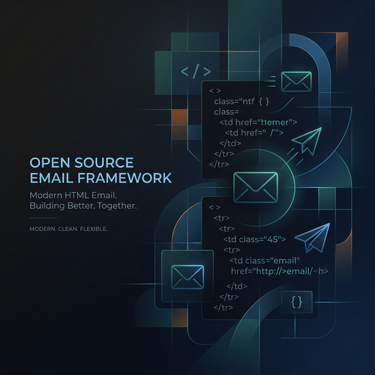
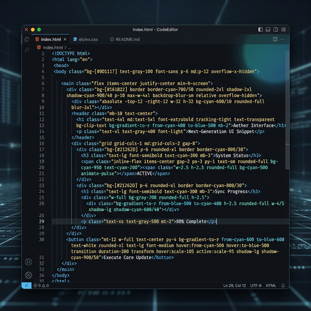

Finally a good solution for the headache of building HTML emails 😮💨


Raise your hand if you despise writing HTML emails natively. The archaic <table> nesting, writing the same inline CSS repeatedly, and guessing what works in Outlook versus Apple Mail... It is a true developer nightmare.
Enter Maizzle. Maizzle is a framework for building responsive HTML emails using modern tools instead of writing messy email-safe HTML by hand.
→ build emails with Tailwind CSS
Who said CSS frameworks are just for websites? Maizzle uses Tailwind CSS directly in your template code, so you can rapidly design beautiful HTML emails. You code entirely utility-first using standard HTML elements.
Modifiers like hover states (hover:bg-blue-500) and responsive queries (sm:w-full) work perfectly out of the box, drastically reducing context switching between styles and markup.

<x-main>
<table class="w-full font-sans bg-slate-50">
<tr>
<td class="p-8 text-center">
<h1 class="text-2xl font-bold text-slate-800 mb-4">BYOHTML™</h1>
<x-button class="bg-indigo-600 hover:bg-indigo-700 text-white">
Click Here
</x-button>
</td>
</tr>
</table>
</x-main>Stop Hand Coding Nested Tables
The time savings from using Tailwind CSS inside your email templates and letting a build engine like Maizzle do the post-processing natively are astronomically high.
Take back your time, eliminate the headache of Outlook 2013 compatibility, and deliver emails faster. Go check out maizzle.com and happy building!
Explore with AI
Want a quick summary or have specific questions about this post? Use your favorite AI agent to dive deeper into the technical details.